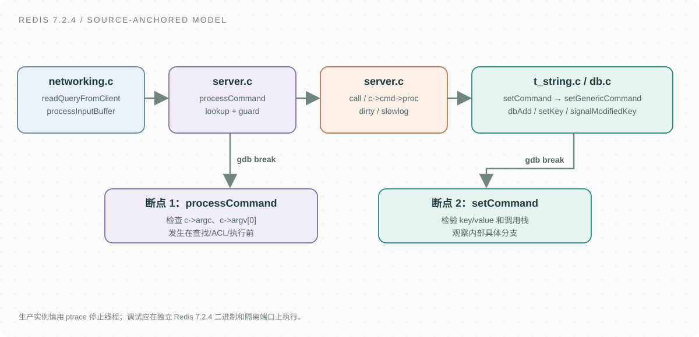
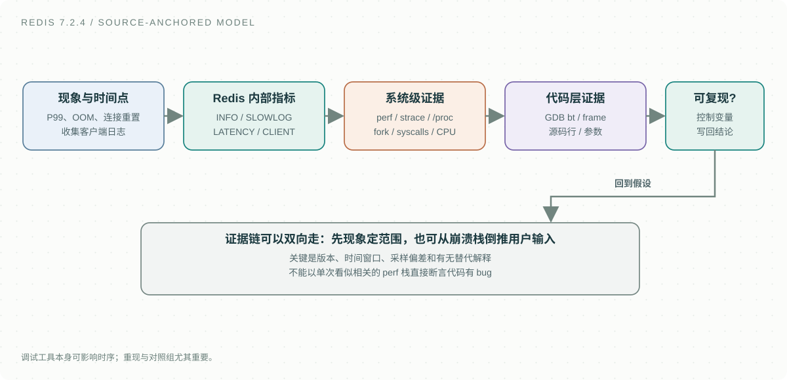
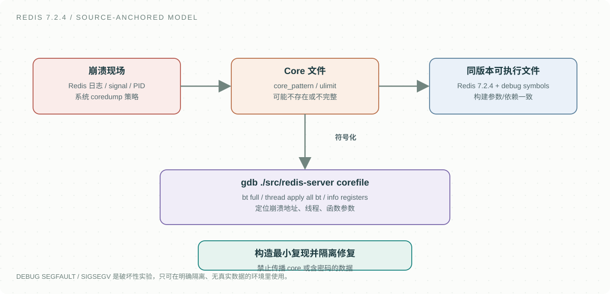

Chapter 25 / Redis 7.2.4 Source Anatomy
源码级调试：GDB、perf、strace 与 Core 证据链
以 Redis 7.2.4 可复现调试构建为基准，从 processCommand、call、setCommand 的断点出发，结合 CPU 采样、syscall 跟踪与崩溃 core 推导可验证的根因。
把一条业务症状映射到真正的 Redis 函数
源码调试不等于对着几十万行 C 代码随机下断点。已知某次 SET 在客户端超时，第一步是判断服务端是否已接收 RESP、是否找到并接受命令、handler 有没有修改 keyspace、回复是否进入缓冲，以及网络写出是否完成。每一个节点都有不同的函数入口和观察工具。
在 Redis 7.2.4，常见主链是 readQueryFromClient()（网络接收）→ processInputBuffer()（组帧/解析）→ processCommand()（认证、ACL、状态门禁）→ call()（执行包装）→ setCommand() / setGenericCommand()（更新键值），最后通过回复缓冲及 writable event 返回客户端。此图为核心路径，并不覆盖脚本、模块或加载期间的特殊调用入口。

可调试构建：版本、编译优化与符号必须匹配
在 GDB 里，函数名、参数和调用栈都依赖正确的调试符号。Redis 7.2.4 的 src/Makefile 默认使用 OPTIMIZATION?=-O3，并在编译/链接标志中加入 DEBUG=-g -ggdb。优化构建仍可能因为内联、寄存器重分配和尾调用导致局部变量显示为 optimized out。要获得更容易阅读的调用链，可在独立 checkout 中以 OPTIMIZATION=-O0 重新构建，并用 MALLOC=libc 减少 allocator 差异。
git clone --branch 7.2.4 --depth 1 https://github.com/redis/redis.git redis-724-debug
cd redis-724-debug
make distclean
make -j4 MALLOC=libc OPTIMIZATION=-O0
file ./src/redis-server
gdb --version这里锁定的标签必须与文章源码链接一致，不能把本地 Redis 8.x 可执行文件拿来给 7.2.4 的行号和内存布局下断点。若已经使用其他编译参数，先清理旧对象文件再重新编译，避免符号与对象文件混用。真正出现崩溃时也要保留故障进程的原始二进制文件，而不是仅靠后来重新编译的最新版代码。
GDB 实验：逐步跨过 processCommand 与 setCommand
对独立 Redis 7.2.4 调试构建，打开终端 A 启动 GDB，设置两个函数断点，然后运行实例；终端 B 再使用 redis-cli 在 6390 端口发起 SET。注意 GDB 在命中断点时暂停进程，客户端等待/超时是预期行为，不能在生产 master 上采用这一方法。
# 终端 A：在 redis-724-debug 仓库根目录
gdb --args ./src/redis-server --bind 127.0.0.1 \
--port 6390 --save "" --appendonly no
(gdb) set pagination off
(gdb) break processCommand
(gdb) break setCommand
(gdb) run
# 终端 B：等待实例已 LISTEN 后发请求
./src/redis-cli -p 6390 SET demo:breakpoint 42
# 回到终端 A，命中 processCommand 后
(gdb) bt
(gdb) p c->argc
(gdb) p (char*)c->argv[0]->ptr
(gdb) continue
# 命中 setCommand，再查看调用栈并继续
(gdb) bt
(gdb) continue预期 processCommand 先命中，命令通过门禁后再命中 setCommand。若未命中第二个断点，要检查命令是否在第一阶段被 ACL、参数个数、客户端状态或 Cluster 路由拒绝。若首次断点无法读取 c，确认当前 stack frame 以及符号是否为本机一致的调试版本。

从调用栈读因果，而不是把栈顶直接当成根因
bt 显示当前线程的调用路径，frame N 切换到特定帧，info locals 和 p 检查局部变量与参数，list 查看附近源码。定位内存崩溃时，栈顶的 memcpy、free 或 zmalloc 可能只是先暴露错误的位置；真正的根因可能发生在更早的一次生命周期管理或越界写入。
应尽量收集业务输入、命令参数、对象 type/encoding/refcount、出错线程上下文以及是否正在 fork、加载 AOF、执行模块命令。可通过 thread apply all bt 观察全部线程，但它是调试器当前捕获的快照，不代表代码过去的所有执行路径。
对只在高并发出现的问题，还需要区分 GDB 单步改变了线程时序：断点暂停整个进程可能使 race condition 消失。此时可用 sanitizer、无侵入指标或低频 profiler 补充观测，避免为了稳定复现而把 bug 本身消掉。
strace 与 perf：从系统调用和 CPU 采样补足源码视角
strace 可观察 epoll_wait、read/write、fsync、fork/clone 等系统调用的参数和返回码；perf 则对一定时间内的 CPU/调用栈进行统计采样。两种工具回答的问题不同：大量 fsync 不一定表示业务 handler 慢，CPU flamegraph 也无法完整重建网络链路里的等待。
# 只在测试进程中使用；需要相应内核权限
pid=$(./src/redis-cli -p 6390 INFO server | awk -F: '/^process_id:/ {print $2}')
sudo strace -tt -T -f -p "$pid" -e trace=epoll_wait,read,write,fsync
# 另一个终端使用 perf（按 3 秒退出）
sudo perf record -F 99 -g -p "$pid" -- sleep 3
sudo perf report --stdio代价：strace 使用 ptrace，可能显著改变 syscall 调度和延迟；perf 的采样精度受符号、frame pointer/unwind 与内核设置限制。绝不要把上述命令作为未评估开销的生产默认操作。低风险问题优先看 INFO、LATENCY、SLOWLOG 和已有指标；当证据要求深入到 syscalls 或栈时，再在隔离实例或可控变更窗口中使用这些工具。
Core dump：必须把崩溃状态、二进制与符号版本成套保存
发生进程崩溃时，debug.c 的 sigsegvHandler() 会记录信号、可访问的崩溃地址与可能的回溯信息。然而是否产生 core 文件，取决于操作系统的 ulimit -c、core_pattern、systemd-coredump、权限及 Redis 自身信号处理路径；不能看到 SIGSEGV 就断定本地目录里一定有 core 文件。

若确实得到 core，应使用版本匹配的可执行文件打开，例如 gdb ./src/redis-server /path/to/core；使用 bt full、thread apply all bt、info registers 重建现场，再对照相同 commit 或 release tag 的源码。core 可能包含数据库 key/value、密码和用户数据，应按照最高敏感级别加密保管，不能直接上传到公共 issue。
DEBUG SEGFAULT、DEBUG PANIC 等命令会主动破坏进程，不能在生产或唯一数据副本执行。本教程不把主动崩溃当作普通排障步骤；若进行崩溃恢复演习，必须使用明确的独立测试实例和完整可恢复的备份。
案例：P99 毛刺与持久化 fork 同时发生，如何证明是 COW？
假设某 Redis 实例 P99 在 BGSAVE 的同一时间窗口突增，而 SLOWLOG 只有短命令。一个合理假设是 fork 暂停事件循环或子进程期间 COW 造成内存压力，但这还不能构成结论。可以先对比 latest_fork_usec、rdb_last_bgsave_time_sec、rdb_last_cow_size 与宿主 CPU、THP 状态、RSS 峰值及日志时间线。
再寻找分辨性的证据：毛刺恰好出现在 fork 时，且与 latest_fork_usec 量级接近，支持“fork 暂停”假设；如果长尾持续整个子进程运行周期并伴随内存压力、swap，则 COW/系统回收可能更相关。还需要排除 AOF fsync、CPU steal time、网络丢包或某个热 key 的竞争解释。
最好的验证方式是复制相同数据量与写入模式到隔离环境，分别测试 BGSAVE 前后延迟分布、关闭/开启 THP 的受控环境（需要系统级批准）、不同写入强度与持久化耗时。只在测试环境做对照，且不会把一组模拟负载的数字冒充生产数据。
交互为离线机制模型；不会读取 Redis 实例或提供真实压测数据。
可交付的排障报告：版本、时间、证据、复现与回滚
源码级定位的价值不在于展示 GDB 截图，而在于形成可证伪的故障机制和恢复方案。报告至少包含：Redis 版本/tag/二进制 hash、运行参数、触发输入、异常前后关键指标、GDB/perf/strace 或 core 证据、相关源码路径、最小复现步骤、替代假设与验证结果，以及修复和回滚标准。
| 阶段 | 证据问题 | 常见遗漏 |
|---|---|---|
| 复现环境 | 与故障 Redis 7.2.4 是否同源码和编译参数？ | 把新版本行号套给旧二进制 |
| 指标定位 | 异常发生在哪个时间窗口？ | 只有截图，没有时间轴 |
| 调用栈 | 执行线程、参数和上下文是什么？ | 只贴栈顶，不查上游生命周期 |
| 控制试验 | 改变一个变量后现象是否稳定变化？ | 把相关性误写成因果 |
| 修复验收 | 功能正确、性能不退化、失败能回滚？ | 只跑一次命令就说已修复 |
第 21–25 章形成了从复制与故障转移，到指标、线上症状和源码调试的完整证据闭环；余下 Lua/模块/版本演进章节也应沿用这种“版本锁定、风险分层、实验和限制明确”的写法。
源码与参考
实现事实固定为 Redis 7.2.4。官方最新运维资料用于补充概念与方法论，不替代固定版本源码校验。